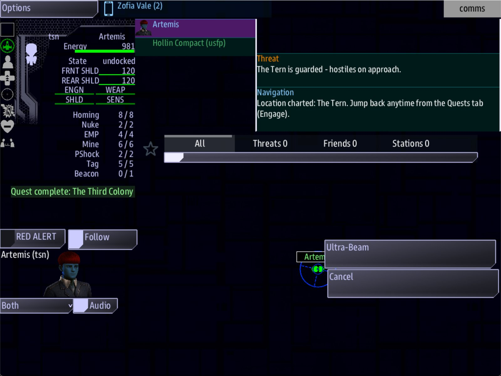

Class 5, Lecture 12 - Battles, part 1: how dangerous a system is¶
What you will have at the end¶
A universe whose fights you chose. You will know how many ships wait in every kind of system, and which line of which file decides it. The Verge gets one number that makes all of it lighter, a fleet of guards whose size you fixed yourself, a second guarded place, and two lines that say how thick the enemy is and how close they wait.
And you will have a budget: a count of the ships in your worst system, written down, so you know what you are asking a crew to fight.

On arrival at The Tern: "The Tern is guarded - hostiles on approach."You change one number in settings.yaml, paste two lines into story.mast, and change
two landmarks.
The video¶
About 6 minutes. Subtitles are available in the player.
Before you start¶
- Your
MyUniversemission as Lecture 9 left it. Its six.amdfiles matchc5-09-organizing-a-big-universe\example\. sbs lint MyUniversesayscleanfor all six files.- The game closed, and the save deleted:
C:\Cosmos\data\missions\common_data\saves\universe_save_the_kestrel_verge_1.yaml.
This lecture needs neither Lecture 10 nor Lecture 11. If you took either, your universe has boarding sites or a ruin in it: the section "What changes in later lectures" on that lecture's page says what reads differently on this page.
Words for this lecture:
| Word | Meaning |
|---|---|
| Fleet | A group of enemy ships that arrive and fight together |
| Tier | How strong a fleet is, from 1 to 11. A higher tier has more ships, and bigger ones |
| Difficulty | One number, from 1 to 11, that the whole game reads. It decides how many fleets, and their tier |
| Guards | A fleet you put on a landmark |
| Budget | The most ships you will let one system hold |
Step 1 - Where the ships come from¶
Three things put enemy ships in front of a crew. You have already written all three without counting them.
| Where | What is there | The line that decides it |
|---|---|---|
| An enemy system | One to four fleets of your foe side |
The mixes from Lecture 5 decide which systems. Difficulty decides how many fleets, and their tier |
| A foe's home | One fleet, close to the station. Mines, if the system is mined | Home: on the side decides where. Difficulty decides the tier |
A landmark with Guards: |
One fleet, near the landmark | The Guards: line. It can carry a tier of its own |
Which ships a foe's fleets are made of comes from the side's Flies: line. You wrote
Flies: Torgoth for the Gleaners in Lecture 3.
How big a fleet is at each tier depends on whose ships they are. This is the number of ships in one fleet, read from the game, for each of the six kinds:
| Tier | 1 | 2 | 3 | 4 | 5 | 6 | 7 | 8 | 9 | 10 | 11 |
|---|---|---|---|---|---|---|---|---|---|---|---|
| Torgoth | 1 | 1-2 | 1-2 | 1-3 | 2-3 | 3 | 3 | 3-4 | 4-5 | 5 | 6 |
| Kralien | 1-2 | 2-3 | 2-3 | 2-4 | 3-4 | 3-5 | 4-6 | 4-6 | 5-6 | 5-6 | 6 |
| Arvonian | 1 | 1-3 | 2-3 | 1-3 | 1-3 | 3-4 | 2-4 | 3-4 | 3-5 | 4-6 | 6 |
| Pirate | 1 | 1-2 | 1-2 | 1-2 | 1-2 | 1-3 | 1-3 | 2-3 | 3-4 | 4-5 | 6 |
| Ximni | 1 | 1 | 1 | 1 | 1 | 1 | 1 | 1 | 1 | 1-2 | 6 |
| Skaraan | 1 | 1 | 1 | 1 | 1 | 1 | 1 | 1 | 1 | 1 | 1 |
1-3 means the game picks: one ship, two, or three. A higher tier also means heavier
ships. A Torgoth fleet at tier 11 is six of their largest.
Step 2 - The Difficulty number¶
Difficulty is in settings.yaml, the file where you named the crew's ship in Class 1.
Open it and find line 53.
The start screen has a slider called Difficulty that sets the same number. The line
in the file is what the slider starts at, and it is what the game uses when you start
with map=0, which skips the start screen.
This is what Difficulty does to one enemy system. The fleets are the Gleaners', so they are Torgoth. Each count is from a game played at that number.
| Difficulty | Fleets in an enemy system | Ships counted |
|---|---|---|
| 1 | 1 | 1 |
| 3 | 2 | 3 |
| 4 | 2 | 4 |
| 5 | 2 | 6 |
| 8 | 3 | 11 |
| 11 | 4 | 24 |
The number of fleets steps up at 3, at 6 and at 9. The tier of each fleet is the Difficulty itself. So Difficulty counts twice: more fleets, and bigger ones.
The Kestrel Verge is a backwater, and its crew is one ship. Change the line to 4.
Keep the capital letters, and the space after the colon.
Difficulty also sets the number of mines in a mined system (four at Difficulty 4, six at 11) and the number of black holes in an anomaly.
Step 3 - Guards with a tier of their own¶
In Lecture 5 you wrote Guards: torgoth on The Bone Pile. With only the kind of ship,
the guards are a fleet at the Difficulty. At 5 that was two ships. At 11 it is six of
the largest.
A number after the word fixes the tier, whatever the Difficulty is. Open
kestrel_verge.amd, find The Bone Pile, and change its Guards: line.
Tier 7 is three Torgoth ships, at any Difficulty. This is a place the Gleaners care about, and now it is defended like one however gently the rest of the galaxy is set.
Give The Tern a guard as well. Somebody is picking at her. Add one line to her record.
### [The Tern](the_tern)
---
At: 1, -2
Prefab: derelict
Terrain: nebula blue
Guards: pirate 2
---
The third colony's ship, circling where she never landed.
pirate 2 is one or two small ships. In the first game this page was measured in, it was one. In the later ones, two.
Four things are true of every guard fleet:
- The crew is warned. On arrival a message titled Threat comes in on Comms, on the ship's own channel: "The Tern is guarded - hostiles on approach."
- They wait by the landmark, not by the crew. How far that is from where the ship arrives changes from game to game. In the games measured for this page, the guards at The Bone Pile were between about 13,000 and 24,000 away, and at The Tern between about 7,600 and 18,300.
- They belong to nobody. Guards are raiders, whatever kind of ship you chose. A ceasefire with the Gleaners does not call off the Torgoth at The Bone Pile.
- They do not come back. When every guard is destroyed the game remembers it, in the save. The next visit has no guards and no warning.
Step 4 - A foe's home¶
The Gleaners' home, at -3, -2, has their station in it. Because they are a foe, the
station has a fleet to defend it. That fleet is always one fleet, at the Difficulty, and
it waits close: between 1,700 and 4,400 from where the crew arrives.
There is one thing in a foe's home that you did not write. In five visits out of seven
the station also launched four fighters, named The Gleaners Red 1 to Red 4. They are
the station's own, they are on the Gleaners' side, and no line of yours sets their
number.
| Difficulty | Ships in the home fleet |
|---|---|
| 1 | 1 |
| 4 | 1 or 2 |
| 5 | 2 |
| 8 | 3 |
| 11 | 6 |
Add four when the fighters launch.
A foe's home is the one place a crew arrives with the enemy already on top of it. Send a story there on purpose, not by accident.
Step 5 - How thick, and how close¶
Two more dials are not in settings.yaml and not in your .amd files. They are lines
in story.mast, beside the two travel lines from Lecture 2.
Open story.mast and find these two lines, near the top:
Leave one empty line under them, and paste this card. The words you may change are the two in quote marks.
# How dangerous the galaxy is. Both are set here for the same reason as the two above.
# DANGER how many systems are enemy systems: "Quiet", "Balanced" or "Dangerous".
# ENCOUNTERS where an enemy system's fleets wait: "On Arrival" (close) or "Dormant"
# (at the far edge of the system).
default shared DANGER = "Quiet"
default shared ENCOUNTERS = "Dormant"
The four lines that start with # are notes to yourself. The game skips them.
DANGER multiplies your Enemy mix:. It does not add fleets to a system. It makes
more systems enemy systems. Counted over the 169 systems nearest home, with the Verge's
Enemy mix: 12%:
DANGER |
Enemy systems | Empty systems |
|---|---|---|
"Quiet" |
14 | 85 |
"Balanced" |
33 | 69 |
"Dangerous" |
54 | 54 |
A region's own Enemy mix: is multiplied the same way. The Hollin Fields say 0%, and
nothing times nothing is nothing: they had no enemy system even at "Dangerous". The Breakers
say 60%, and at "Dangerous" all nine of their systems were enemy systems.
The Verge stays "Quiet". Your regions already say where the danger is.
ENCOUNTERS decides where an enemy system's fleets wait.
ENCOUNTERS |
Distance to the nearest enemy ship on arrival |
|---|---|
"On Arrival" |
About 18,000 to 20,000 |
"Dormant" |
About 40,000 to 44,000 |
"Dormant" gives a crew time to read the card, look at the map and talk. The Verge uses
it. It moves only the fleets of an enemy system. Guards and a foe's home fleet stay
where Steps 3 and 4 put them.
Spell both words exactly, capitals and all. A wrong word is not an error. It is the gentler setting, in silence.
Step 6 - The ship budget¶
Now count. For each system a story sends the crew to, add up the three sources.
The Verge's worst system is The Bone Pile. It is in the Breakers, where most systems are enemy systems, and it has guards.
| At The Bone Pile | Difficulty 4 | Difficulty 8 | Difficulty 11 |
|---|---|---|---|
| The Gleaners' fleets (an enemy system) | 4 | 10 | 24 |
The guards, torgoth 7 |
3 | 3 | 3 |
| All the hostile ships | 7 | 13 | 27 |
The Difficulty 4 column was counted in one game. In the other two, the Gleaners' ships were counted in a game at that number and the three guards added.
Seven ships against one is already a story about running, or about clearing the guards first and coming back. Twenty-seven is not a fight. A writer sets Difficulty for the crew they expect, and then checks the worst system at that number.
How many is too many for the game itself? Three facts, and one thing nobody knows.
| Fact | Where it comes from |
|---|---|
| A system exists only while a crew is in it. When the last ship jumps out, every ship and rock in it is removed | Counted on this page: after a jump, no ship of the old system was left |
| So the ships in play are the ships in the systems that crews are in. One crew: one system. Three crews in three systems: three systems at once | The same count |
| The game's makers ran the real game with more and more fighting ships until it slowed. It kept full speed up to about 190 ships fighting at once | Their own test, in the Open Universe design notes. It had no consoles connected |
| What a full bridge of consoles can take is not known | Nobody has measured it. Stay far below 190 |
So the budget is a sum: the ships in your worst system, times the number of crews that can be in different systems at once. For the Verge at Difficulty 4 that is 7, for one crew. At Difficulty 11 with eight crews spread out it could reach 216, which is past the only number anyone has measured.
Rocks and clouds are cheap by comparison. In the same test the game held 100,000 of
them at full speed. TERRAIN_SELECT, on line 57 of settings.yaml, sets how many a
system gets. Counted in one empty system and one enemy system:
TERRAIN_SELECT |
Things in an empty system | Things in an enemy system |
|---|---|---|
"none" |
16 | 22 |
"few" |
635 | 542 |
"some" |
About 2,000 | About 1,100 |
"lots" |
2,672 | 1,890 |
"max" |
4,921 | 2,505 |
A nebula system held between 2,800 and 4,400 whatever this line said. The Verge keeps
"some".
Step 7 - Check it¶
Save all three files.
== dialogue\deepwell.amd ==
clean
== dialogue\gleaners.amd ==
clean
== dialogue\hollin.amd ==
clean
== jobs.amd ==
clean
== kestrel_verge.amd ==
clean
== lore.amd ==
clean
6 amd + 1 mast file(s): 0 error(s), 0 warning(s)
Six files, all clean.
Lint does not read settings.yaml at all. Nothing you do to line 53 changes what lint
says.
Each row below was made on purpose, one change to the finished files, then linted, then played.
Mistakes lint finds
| The mistake | What the game does | What lint says |
|---|---|---|
Guard: torgoth 7 |
No guards | A warning: "Did you mean Guards?" (unknown-field) |
Guards: written on a region or on a side |
Nothing. Only a landmark has guards | A warning: "Guards is a landmark field, and this record is being read as a region" (unknown-field) |
Difficulty: 8 or Danger: Dangerous written in the title record of kestrel_verge.amd |
Ignored. Neither is a dial of the .amd file |
A warning: "is not a field a map has" (unknown-field) |
The card pasted at the very end of story.mast, or with spaces in front of its two lines |
Nothing runs: no ship, no station | An error: "Bad indentation ... The story does not compile, so NOTHING in this mission runs" (mast-compile) |
Mistakes lint cannot see
Lint says clean for every one of these.
| The mistake | What the game does |
|---|---|
DIFFICULTY: 15 |
Plays, with more than the top of the table: six fleets of six in an enemy system. 36 ships |
DIFFICULTY: 0 |
Plays as the gentlest setting: one fleet of one ship |
DIFFICULTY: four |
The game stops with an error soon after it starts. mast.runtime.log holds it |
DIFFICULTY:4, with no space after the colon |
The game cannot read the file the fast way and says so in mast.runtime.log, in a line that begins ryaml refused. It plays at Difficulty 5 |
Difficulty: 4, in small letters |
Ignored. The game plays at 5 |
DANGER: "Dangerous" written in settings.yaml |
Ignored. This dial is read only from story.mast |
TERRAIN_SELECT: "heaps", or any word that is not one of the five |
No rocks and no clouds at all, as if it said "none" |
default shared DANGER = "dangerous", in small letters |
"Quiet". The word has to match letter for letter |
default shared ENCOUNTERS = "dormant" |
"On Arrival" |
ENCOUNTER for ENCOUNTERS |
"On Arrival" |
default shared DANGER = Dangerous, with no quote marks |
Nothing runs. mast.runtime.log says name 'Dangerous' is not defined |
Guards: torgoth seven, torgoth x7 or torgoth 7.5 |
The tier is not a whole number, so the guards are a fleet at the Difficulty, as if you wrote no tier |
Guards: 7 torgoth, or Guards: torgoth, 7 |
No guards. mast.runtime.log says there is no fleet for 7, or for torgoth,, and lists the six kinds. The Threat message is still sent |
Guards: gleaners 7, the key of a side |
No guards. The word is a kind of ship, never a side. The log names it. The Threat message is still sent |
Guards: none |
No guards, a line in the log, and a Threat message for a threat that is not there. To have no guards, write no Guards: line |
Guards: torgoth 70 |
Six of the largest. Any tier above 11 is 11 |
Guards: torgoth 200 |
Three ships: a number this large means "two above the Difficulty" |
Guards: torgoth -3 |
One ship. Any tier below 1 is 1 |
Two Guards: lines on one landmark |
The second one only |
Guards: torgoth 7, kralien 7 |
One fleet of Torgoth at the Difficulty. A landmark has one guard fleet |
Flies: Gleaner on a side, where a kind of ship goes |
That side has no fleets anywhere. The log names the word once for each fleet it could not make |
Three things that look wrong and are not:
| You wrote | What the game does |
|---|---|
Guards: Torgoth 7, with a capital |
Works. The kind of ship is read in any letters |
Guards: torgoth 7 on a station landmark |
Works. Raiders wait near the station |
The card with shared left out, or default left out |
Works today. Keep both words all the same: they are what lets the start screen change the setting later |
So check these by eye:
- Line 53 of
settings.yamlreadsDIFFICULTY:, a space, and a number from 1 to 11. - In
story.mastthe two card lines start at the left edge, and their words are in quote marks with capitals as on this page. - Every
Guards:line is one kind of ship, a space, and at most one whole number from 1 to 11. - After you play,
mast.runtime.logis empty.
Step 8 - Play it¶
- You start at Kestrel Relay. Nothing in the Hollin Fields shoots.
- In the
helmwindow, open the Quest Log and Engage The Third Colony. The card reads The Tern, and on Comms, under the ship's own name, a message titled Threat says she is guarded. One or two small ships are out by the wreck. - Engage The Breaking Yard. This is the Gleaners' home. Their fleet is close.
- Close the game. Change line 53 to
DIFFICULTY: 8, delete the save, and do step 3 again. The fleet at the Gleaners' home was one or two ships. Now it is three. Put line 53 back to 4 and delete the save once more.
What you need to know about danger
| Fact | What it means for your story |
|---|---|
| Difficulty counts twice: more fleets, and a higher tier | The step from 5 to 8 nearly doubles an enemy system. Test your worst system at the number you ship with |
| A guard fleet with a tier does not change with Difficulty | Use it where the story needs a fight of a known size |
| A guard fleet with no tier grows with Difficulty | Use it where the place should be as hard as everything else |
| Guards are raiders, and gone for good once destroyed | They are an obstacle, once. They are not a side's army |
DANGER changes which systems are enemy systems |
Change it and the map a crew remembers from last week is a different map |
| An enemy system was full again on every visit | Three visits to one enemy system found the same eleven ships each time. Nobody shot at them, so this does not say what a half-cleared system does. The game's own notes say a system cleared completely stays clear |
If something goes wrong¶
| What you see | Likely cause |
|---|---|
| No ship and no station. Nothing happens | The card is indented, or at the end of story.mast, or a word in it lost its quote marks. Lint finds the first two. Read mast.runtime.log for the third |
| The game plays at Difficulty 5 whatever line 53 says | The line lost its capitals or its space. Or the file was not saved |
| Enemy fleets are still close on arrival | ENCOUNTERS or "Dormant" is misspelled. Or the system is a foe's home, or the ships are guards |
| No guards, and a Threat message all the same | The word after Guards: is not one of the six kinds. mast.runtime.log names it |
| No guards and no Threat message | The crew destroyed them earlier in this save |
| Guards are a different size from the table | The tier is missing or is not a whole number, so they follow the Difficulty |
| A foe side has no ships anywhere | Its Flies: line names something that is not a kind of ship |
| Four fighters you never wrote, at a foe's home | The foe's station launches them. See Step 4 |
Exercise¶
- Decide who your game is for: one new crew, one practiced crew, or several ships. Set line 53 to match. New crews are happiest at 3 or 4.
- List every system your story sends the crew to. For each, write down the three sources: is it an enemy system, is it a foe's home, does it have guards?
- Give each guarded landmark a tier on purpose. Use the table in Step 1 to pick the number of ships you want.
- Work out your budget: the ships in your worst system at your Difficulty, times the crews that could be in different systems. Write the number at the top of your main file, in a note that starts with two slashes.
- Choose
"On Arrival"or"Dormant". Say why, in one sentence, in the same note. - Play to your worst system and count. Does it match your sum?
Checkpoint¶
You are done when all five are true:
sbs lint MyUniversesayscleanfor all six files.mast.runtime.logis empty after a play.- A landmark with
Guards:and a tier sends the Threat message and has the number of ships you chose. - You can say how many ships an enemy system holds at your Difficulty without looking it up.
- Your budget is written in your main file.
Next¶
Lecture 13 is the other kind of battle: one you stage yourself, at one place, at the moment the story arrives there.
Further reading¶
- "The dials" in the Open Universe writer's walkthrough: the mixes and chances.
- "Painting the map", in the same walkthrough:
Guards:andTerrain:on a landmark. - "Battles and fleets" in the Open Universe reference: where every enemy ship comes from,
the Difficulty and Danger numbers,
Guards:in full, and the ship budget. - "Fleets & raiding" in the sbs_utils guide: what a fleet is and how tiers work. It is written for programmers; the tables are the part to read.
- Lecture 5 of this class: the mixes, regions and landmarks this lecture counts.
Download this lecture's finished files (a zip of its example folder).